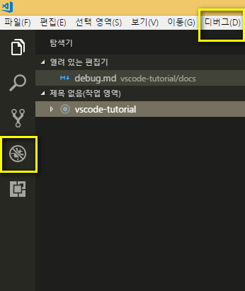
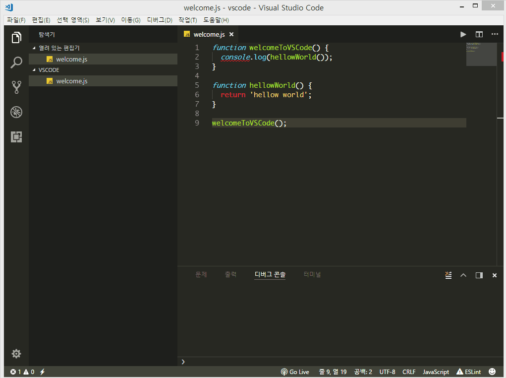

vscode debugging¶
vscode 에서 디버깅은 핵심기능중 하나입니다.
vscode 에는 node.js 런타임에 대한 디버깅 지원기능이 내장되어 있어 JavaScript, TypeScript 및 JavaScript로 변환된 다른 언어를 디버깅 할 수 있습니다. 그러기에 기본적으로 디버깅은 하려면 nodejs 를 설치해야 합니다.
다른 언어에 대해서는 확장기능을 설치해서 이용이 가능합니다.

vscode 폴더에 wecome.js 라는 자바스크립트 코드를 하나 만들고 디버깅을 해봅니다.

고급 디버깅을 하려면 환경설정을 해줘야 합니다. 상단에 'launch.json' 구성을 클릭하면 디버깅 환경설정파일이 생성됩니다.
'launch.json' 파일은 '.vscode' 폴더에 생성됩니다.

'launch.json' 의 구성에서 이름을 알기 쉽게 변경해봅니다.
디버깅을 클릭하면 변경한 js 디버깅이라는 이름으로 변경되어 있습니다.
중단점을 설정하고 디버깅시작을 하면 디버깅 작업창이 뜹니다.
- 계속/일시중지 F5
- 단위실행 F10
- 단계정보 F11
- 단계출력 shift+F11
- 다시시작 ctrl+shift+F5
- 중지 shift+F5

launch.json¶
다음 속성은 실행구성에 필수 요소입니다.
type: 실행구성에 사용할 디버거 유형(node, php, python..등)request: 실행구성의 요청유형 현재는 'launch', 'attach` 입니다.name: 디버그 드롭다운에 나타나는 디버그 런치 이름
다음은 실행구성에서 사용할수 있는 선택적 속성입니다.
preLaunchTask: 디버그 세션이 시작되기 전에 작업을 시작하려면 이 속성을 tasks.json 에 지정된 이름으로 설정해야합니다.internalConsoleOptions: 디버깅 세션동안 다버그 콘솔 패널의 가시성을 제어합니다.debugServer: 디버그를 시작하는 대신 지정 포트에 연결합니다.
많은 디버거가 다음 속성 중 일부를 지원합니다.
program: 디버거를 시작할 때 실행할 실행 파일 또는 파일args: 디버깅 할 프로그램에 전달된 인수env: 환경 변수cwd: 의존성 및 기타 파일을 찾기위한 현재 작업 디렉토리port: 실행중인 프로세스에 연결할 때의 포트stopOnEntry: 프로그램이 시작되면 즉시 중단console: 어떤 종류를 콘솔을 사용할지 지정. 예를 들어 internalConsole, integratedTerminal, externalTerminal.
vscode는 문자열 내부의 변수 대체를 지원 launch.json하며 다음과 같이 미리 정의 된 변수가 있습니다.
${workspaceFolder}: vscode에서 연 폴더의 경로${workspaceFolderBasename}: vscode에서 슬래시없이 열리는 폴더 이름 (/)${file}: 현재 열려있는 파일${relativeFile}: workspaceFolder 에서 현재 열린 파일${fileBasename}: 현재 열려있는 파일의 기본 이름${fileBasenameNoExtension}: 파일 확장명이 없는 현재 열린 파일의 기본 이름${fileDirname}: 현재 열려있는 파일의 디렉토리 이름${fileExtname}: 현재 열려있는 파일의 확장자${cwd}: 시작시 태스크 러너의 현재 작업 디렉토리${lineNumber}: 활성 파일에서 현재 선택된 행 번호
참고: https://code.visualstudio.com/docs/editor/debugging